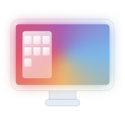
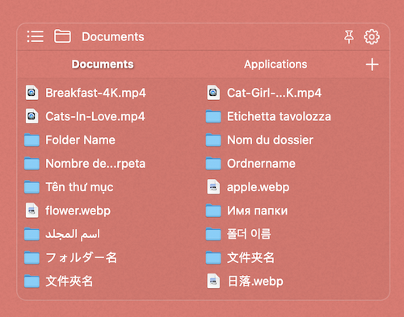
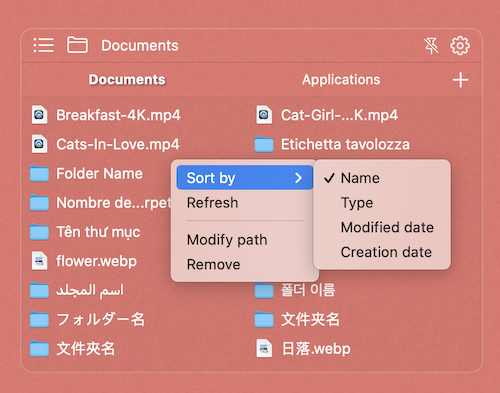
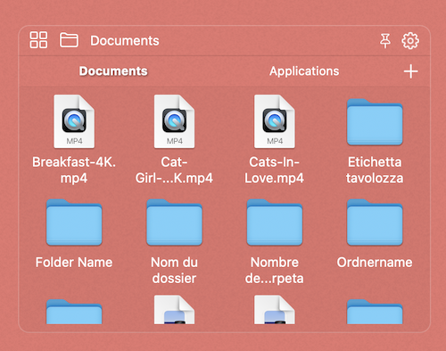
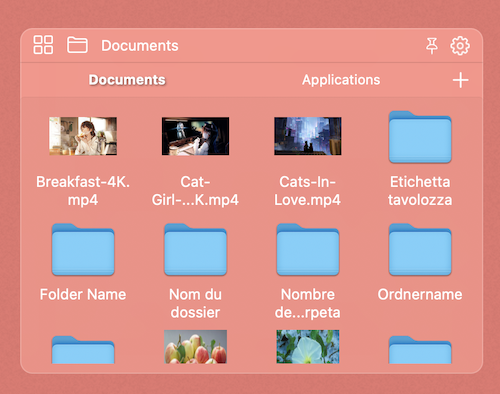

桌面文件盒
Desktop Files Box

功能介绍
这是一个小巧、高效、省时的桌面文件助手
This's a small, efficient and time-saving desktop file assistant
可以建立多个标签，将各处文件映射到桌面显示。
Multiple labels can be established to map files everywhere to the desktop display.
可以支持名称、时间等多种方式进行分类显示。
Can support name, time and other ways to classify and display.
预览文件内容，让你快速识别到你要的文件，双击即可打开它。
Preview the content of the file, allowing you to quickly identify the file you want, and double-click to open it.
拖动文件可以到任何地方或应用程序打开它。
Drag the file to any place or application to open it.
丰富的界面样式定义，可以彰显自己的个性。
Rich interface style definition, you can show your own personality.
置顶显示按钮，让文件盒快速出现在你面前。
Put the display button on the top, so that the file box will appear in front of you quickly.
完美兼容多显示器切换显示。
Perfectly compatible with multi-monitor switching display.
可以自定义各种显示样式
Various display styles can be customized

显示为列表模式
Displayed in list mode
钉在桌面上
Pinned to the desktop

修改排序规则
Modify collation
修改文件盒路径
Modify file box path
删除文件盒
Remove file box

显示为图标模式
Displayed in icon mode
添加文件新标签
Add new file tab

在设置中打开显示预览图标
Turn on Show preview icon in settings
点击⚙️打开显示偏好设置面板
Click ⚙️ to open the Display Preferences panel